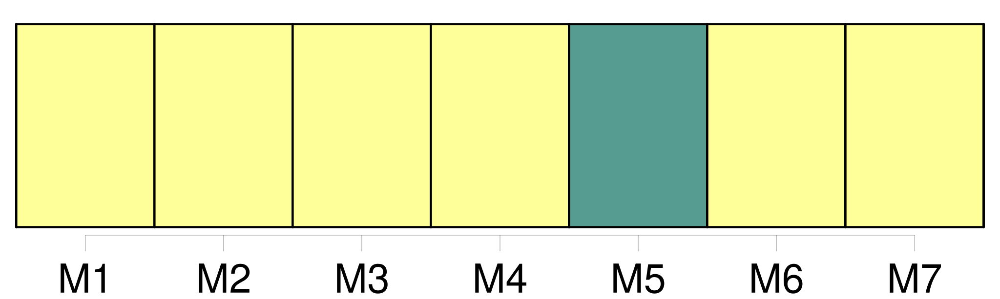
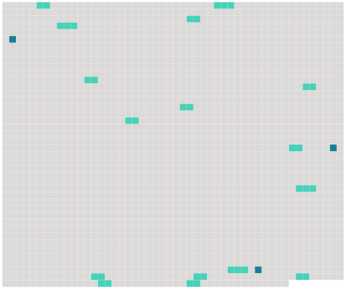

Longueur nb maillons : 19 mentions |
  |
Bien que leur ressemblance avec [l'Homme] ait toujours frappé les esprits, la science a mis de nombreux siècles à prouver le lien étroit qui existe entre ces animaux et [l'espèce humaine] [2 phrases]
Même s'il ne fait plus de doute aujourd'hui que « [l'Homme] est un singe comme les autres », le terme est majoritairement utilisé pour parler des animaux sauvages et évoque un référentiel culturel, littéraire et artistique qui exclut [l'espèce humaine] [3 phrases]
Le terme de « grand singe » désigne toutes les espèces faisant partie des hominidés, c'est-à-dire les espèces actuelles de gorilles, chimpanzés communs ou bonobos, orangs-outans et [hommes] , ainsi que les espèces intermédiaires aujourd'hui éteintes. [9 phrases] Dans son Histoire des animaux, il décrit le « singe » ( ou « pithèque », probablement le magot ), le « cèbe » ( le cercopithèque ) et le « cynocéphale » ( le babouin ), qui « ont une nature intermédiaire entre celle de [l'homme] et celle des quadrupèdes ». [1 phrases] Pour le naturaliste romain du Ier siècle Pline l'Ancien, les singes sont les animaux qui, « par leur conformation, ressemblent le plus à [l'homme] ». [4 phrases]
Il constate en effet que « de tous les animaux le singe ressemble le plus à [l'homme] pour les viscères, les muselés, les artères, les nerfs et la forme des os ». [2 phrases] Le motif du singe est souvent repris dans les enluminures, les fresques et les sculptures, et symbolise la folie et la vanité de [l'Homme] [6 phrases] La première regroupe les « singes », c'est-à-dire les animaux « sans queue, dont la face est aplatie, dont les dents, les mains, les doigts et les ongles ressemblent à ceux de [l'homme] et qui, comme [lui] , marchent debout sur leurs deux pieds », et inclut l'Orang-outan, le Pithèque et le Gibbon. [9 phrases]
Il en fait l'un des quatre taxons de l'ordre des Primates, aux côtés des genres Homo ( [l'espèce humaine] ), Lemur ( les lémuriens et les Dermoptères ) et Vespertilio ( les chauves-souris ). [15 phrases]
La principale exception à ce constat est la place réservée à [l'espèce humaine] , [qui] y est systématiquement rangée dans un groupe bien à part, les savants de l'époque rechignant à faire tomber l'ancestrale barrière entre « [l'Homme] » et « les bêtes sauvages ».
Controverses sur la place de [l'Homme]
L'affirmation du fait que [l'homme] est un singe est aujourd'hui banale, certains titres comme « [L'homme] est un singe comme les autres » soulignent cet état de fait. |
 |
La ressource peut être téléchargée sur la page Ortolang
Si vous avez des questions ou vous voyez des erreurs, merci d'envoyer un mail à silvia.federzoni89@gmail.com
Site développé par S. Federzoni (contact)